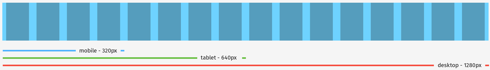

<div class="container">
	<div class="row">
		<div class="col-sm-12 col-md-12 col-lg-12">
			<h1>Grids</h2>
				<br/>
				<br>
				<p class="longText">We use a responsive <a href="http://www.framelessgrid.com">frameless</a> grid system for all of our sites. It scales nicely from 4 columns for mobile (320px) to 8 for tablet (640px) to 16 for desktop (1280px). Columns are 60px wide with a 20 px gutter (with 10px padding on the far left and right sides).
				</p>
		</div>
	</div>
	<!-- Pagination. If you have more than one page, set the multipage variable in the Frontmatter to true. Editing the pagination code happens in /_includes/homePagination.html.
		NOTE: This is currently broken in the Jekyll ver of this template.
		-->
		{% if page.multipage %}
			{% include homePagination.html %}
		{% endif %}
